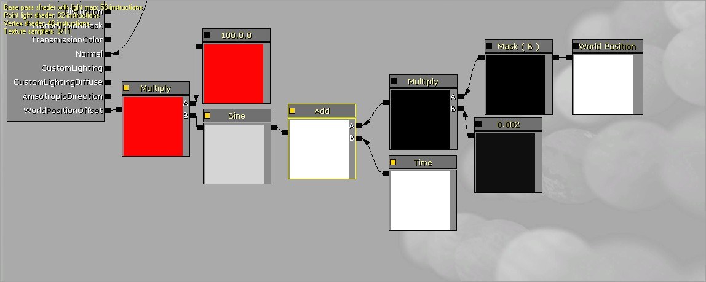
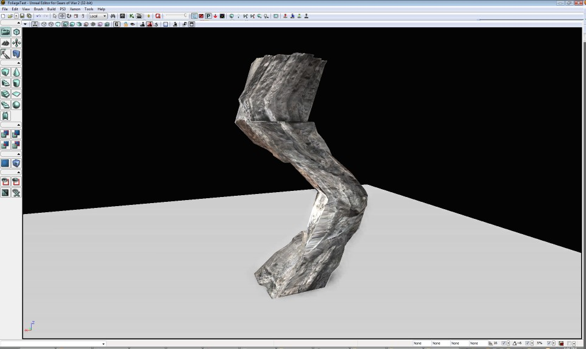

UDN
Search public documentation:
WorldPositionOffset
日本語訳
中国翻译
한국어
Interested in the Unreal Engine?
Visit the Unreal Technology site.
Looking for jobs and company info?
Check out the Epic games site.
Questions about support via UDN?
Contact the UDN Staff
中国翻译
한국어
Interested in the Unreal Engine?
Visit the Unreal Technology site.
Looking for jobs and company info?
Check out the Epic games site.
Questions about support via UDN?
Contact the UDN Staff
UE3 Home > Materials & Textures > World Position Offset
World Position Offset
Document Changelog: Created by Daniel Wright.
Overview
World Position Offset allows artists to modify vertex world position in the material editor, which allows arbitrary deformation effects and custom ambient animation for different types of objects.
How it works
Whatever you plug in to the World Position Offset input simply gets added to the vertex's position. For example, the below nodes create a constantly moving sine wave down the Z axis of a mesh which offsets its vertices in the x axis:  Here is the effect of that material applied to a pillar mesh:  It's probably a good idea to brush up on vector math and geometry before trying to create anything complicated. Here are a few useful pages:
Vertex shader
The World Position Offset material input is executed in the vertex shader. This is different from all the other existing material inputs, which are applied in the pixel shader. A large number of the material nodes exposed in the material editor won't work in vertex shaders, specifically anything involving a texture lookup. These nodes will notify you with an error saying "Invalid node used in vertex shader input!". All of the math functions work along with WorldPosition, VertexColor and most of the constants such as Time and ObjectPosition. A consequence of operating in the vertex shader is that the tessellation of the mesh is important, since only vertices are deformed. You can see this in the image above. Notice that the material editor shows vertex instructions in the top left if you plug something in to World Position Offset which will let you track how expensive of a vertex shader you are creating.
Useful material expressions
See the MaterialsCompendium for descriptions of all of these nodes.
- WindDirectionAndSpeed - Use this node to coordinate wind animations between different objects in a level.
- RotateAboutAxis - Helper node that makes rotating about an arbitrary axis simple.
- FoliageNormalizedRotationAxisAndAngle - Use in conjunction with InteractiveFoliageActor's to get more interactive levels.
Inputs that change per vertex
World position is useful for adding variation between vertices, for example a field of grass with waves of wind blowing through. Vertex color is useful for applying arbitrary weights to different parts of a mesh. You can even paint vertex influences using the Mesh paint tool and have these affect the animation. A good approach is to have a different color per leaf bunch that changes the sine wave phase per leaf, and then paint into another channel to weight how much each vertex can move. As of QA_APPROVED_BUILD_DEC_2009, the WorldNormal node can also be used to access the vertex's world space normal.Inputs that are constant per vertex
WindDirectionAndSpeed is useful for getting wind parameters from any wind actors placed in the level, which can be changed at runtime. ObjectWorldPosition is useful for adding variation per-object. And of course, Time is useful for procedural animation over time.Performance considerations
World Position Offset generates vertex shader code, which is executed once per vertex. You can track how many instructions you are adding by comparing the Vertex shader instruction count with and without your nodes connected. To know the actual impact, setup a level on your target platform and profile with and without the World Position Offset using a tool like PerfHUD or PIX.
Limitations
World Position Offset does not work with anything that accesses vertex positions on the CPU. This means decals and shadow volumes won't render correctly, along with some other effects. It also does not change collision or affect physics, it is purely a visual effect, so it's best not to do large offsets with this method, but use physics instead. Warning - offseting positions outside of an object's bounds will cause rendering artifacts! You can see the bounds that are used for culling by enabling the Show Bounds show flag and selecting an object in the editor. In QA_APPROVED_BUILD_MAY_2010, a property called BoundsScale has been added to primitive component to allow increasing the bounds on meshes with large deformation.